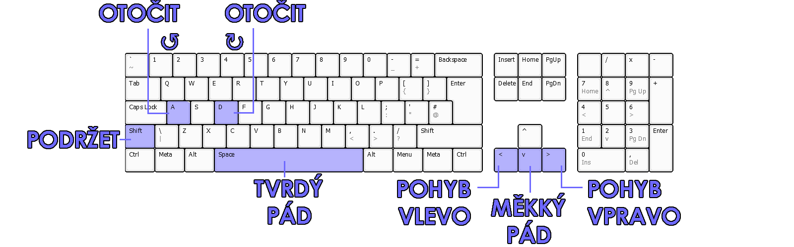

Uživatelská dokumentace
1. O projektu
Maturitní projekt Kooperativní Tetris vychází ze známé arkádové hry Tetris, která byla vytvořena již roku 1984 Alexeyem Pajitnovem. Jde o vlastní implementaci této klasické hry v oblíbeném herním enginu Unity. Nejdůležitějším originálním prvkem této implementace hry je kooperativní režim, ve kterém se hrácí pole rozšíří pro další hráče, kteří následně spolupracují a snaží se dosáhnout společného skóre.
2. Instalace a spuštění
- Přejděte na GitHub releases projektu.
- Stáhněte si nejnovější
.zipsoubor pro svůj operační systém. - Rozbalte soubor do nové složky.
- Otevřete složku s rozbalenými soubory.
- Spusťte spustitelný soubor. (
.exepro Windows,.x86_64pro Linux)
3. Pravidla
- Hráči mají za úkol vyčistit jedotlivé řádky tím, že je zaplní tetrominy (dále nazýváno pouze bloky).
- Každý hráč může v jednom okamžiku ovládat pouze jeden blok. (viz. ovládání)
- Gravitace se s roustoucí úrovní postupně zvyšuje, což zrychluje hru a zvyšuje obtížnost a skóre.
- Skóre i obtížnost je společná pro všechny hráče.
- Hra je prohraná, když není kde vygenerovat další blok.
4. Popis herního pole
4.1 Ukázka

4.2 Legenda
4.2.1 Prvky související s bloky
- Červený rámeček: Zde se zobrazují bloky "ve frontě", které hráči dostanou po uzamčení aktivního bloku (a nebo pokud použili tlačítko podržení a nedrží zatím žádný blok).
- Modrý ráměček: V tomto prostoru se zobrazují podržené bloky.
- Fialové ráměčky: Prostor, ve kterém se objeví nové bloky po uzamčení předešlých.
4.2.2 Informační prvky
- Černý rámeček: Aktuální rychlostní úroveň
- Bílý ráměček: Aktuální skóre (viz. bodování)
5. Menu
5.1 Navigace v menu
- Do menu pozastavené hry, zpět do hry nebo zpět z nastavení se dostanete stisknutím klávesy
Esc. - Pro procházení nabídky položek využijte šipek nahoru a dolů.
- Po vybrání položky menu stiskněte klávesu
Enternebo mezerník.
5.2 Ukázky:
5.2.1 Menu pozastavené hry
5.2.2 Menu prohrané hry

5.2.3 Nastavení

5.3 Legenda:
5.3.1 Menu pozastavené hry:
- Settings: Otevře menu s nastavením.
- Restart: Restartuje hru (počet hráčů zůstává stejný).
- Exit: Opustí hru.
- Add player: Přidá do hry hráče, rozšíří hrací pole.
- Remove player: Odebere ze hry hráče, zúží hrací pole.
5.3.2 Menu prohrané hry:
- Score: Dosažené skóre
- High score: Nejvyšší dosažené skóre
- Restart: Restartuje hru.
- Počet hráčů zůstává stejný.
- Exit: Opustí hru.
5.3.3 Nastavení:
- Volume: Nastavení hlasitosti.
- Ovládání pomocí pravé a levé šipky
- Animations: Přepíná stav animací.
- OFF = vypnuté animace, ON = zapnuté animace
- Scoring alerts: Přepíná stav upozornění bodovaných úkonů.
- OFF = vypnuté upozornění, ON = zapnuté upozornění
- Back: Vrátí Vás do menu pozastavené hry.
6. Ovládání
6.1 Rozložení ovládacích prvků
6.1.1 Hra jednoho hráče:

6.1.2 Kooperace dvou hráčů:
6.1.3 Kooperace tří hráčů:
6.2.1 Legenda
6.2.1 Pohyb:
- Pohyb doprava: Přesune blok o 1 kostku doprava + spustí automatické opakování, pokud je držen po dobu 0,3 s.
- Přesun doleva: Přesune blok o 1 kostku doleva + spustí automatické opakování, pokud je držen po dobu 0,3 s.
- Měkký pád: Přesune blok dolů 20krát rychleji, než je normální rychlost pádu.
- Za měkký pád jsou přičítány body viz. bodování
- Tvrdý pád: Přesune blok na zem a okamžitě zablokuje aktivní blok.
- Za tvrdý pád jsou přičítány body viz. bodování
6.2.2 Rotace:
- Rotace po směru hodinových ručiček: Otočí blok o 90° ve směru hodinových ručiček
- Otočení proti směru hodinových ručiček: Otočí blok o 90° proti směru hodinových ručiček.
6.2.3 Ostatní:
- Podržet: Přesune aktuálně aktivní blok do oblasti podržení a okamžitě vytvoří nový blok.
- Po použití funkce podržení musí být blok uzamčen, aby se funkce znovu aktivovala.
7. Bodování
7.1 Tabulka bodování
Následující tabulka vysvětluje bodování hry:
| Úkon | Počet bodů | Popis |
|---|---|---|
| Single | 100 x úroveň | 1 vyčištěný řádek |
| Double | 300 x úroveň | 2 naráz vyčistěné řádky |
| Triple | 500 x úroveň | 3 naráz vyčištěné řádky |
| Tetris | 800 x úroveň | 4 naráz vyčištěné řádky |
| Mini T-Spin* | 100 x úroveň | Jedodušší forma T-Spinu, bez vyčíštěného řádku |
| Mini T-Spin Single | 200 x úroveň | Jednodušší forma T-Spinu, 1 vyčištěný řádek |
| T-Spin* | 400 x úroveň | T-Spin, bez vyčištěného řádku |
| T-Spin Single | 800 x úroveň | T-Spin, 1 vyčištěný řádek |
| T-Spin Double | 1200 x úroveň | T-Spin, 2 naráz vyčištěné řádky |
| T-Spin Triple | 1600 x úroveň | T-Spin, 3 naráz vyčištěné řádky |
| Měkký pád | 1 x n | Blok je pomocí měkkého pádu shozen o n řádků |
| Tvrdý pád | 2 x m | Blok je pomocí tvrdého pádu shozen o m řádků |
| Back-to-Back | 0.5 x úkony | Bonus za dva po sobě jdoucí složité úkony** |
*Mechanika T-Spinu a Mini T-Spinu popsána podrobně zde, **Složité úkony: Tetris, Mini T-Spin Single, T-Spin Single, T-Spin Double, T-Spin Triple
8. Zdroje
8.1 Použité knihovny
- C# https://dotnet.microsoft.com/en-us/languages/csharp
- Unity https://unity.com/
- DocFX https://dotnet.github.io/docfx/
8.2 Dokumentace
- C# https://docs.microsoft.com/en-us/dotnet/csharp/
- Unity https://docs.unity.com/
- DocFX https://dotnet.github.io/docfx/tutorial/docfx_getting_started.html
8.3 Ostatní
- Hudba: 8bit Dungeon Boss - Kevin MacLeod https://incompetech.com/music/royalty-free/
- Pozadí: https://assetstore.unity.com/packages/2d/textures-materials/sky/starfield-skybox-92717